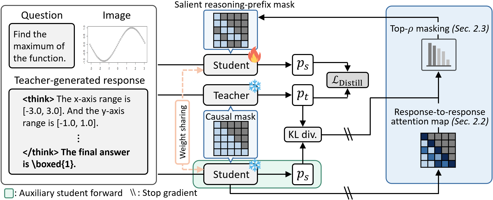
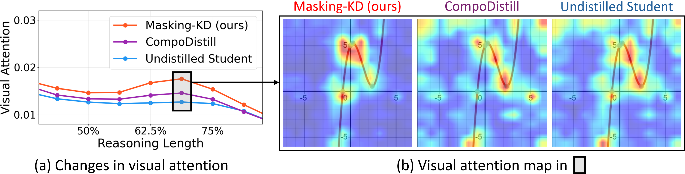
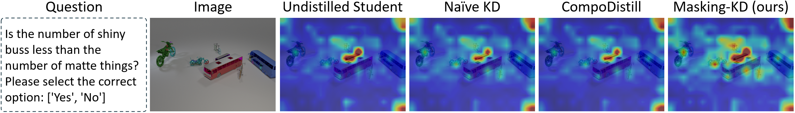
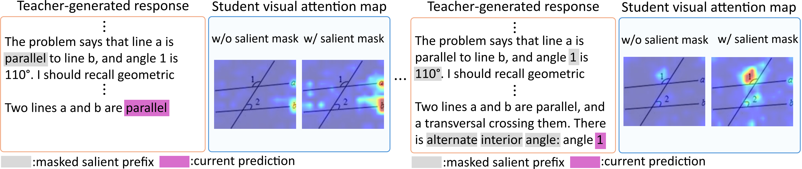

Abstract
Recent think-answer approaches in VLMs, such as Qwen3-VL-Thinking, boost reasoning performance by leveraging intermediate thinking steps before the final answer, but their computational cost becomes substantial, especially for larger VLMs. To distill such capabilities into compact think-answer VLMs, a primary objective is to improve the student's ability to utilize visual evidence throughout its reasoning trace, as long think-answer traces suffer from visual forgetting issues. To this end, we introduce a novel think-answer distillation framework that encourages the student to anchor its thinking on visual information by masking the student's salient reasoning prefixes. To compensate for such masked textual cues, the student is encouraged to rely more on visual evidence as an alternative source of information during distillation. Our masking strategies include: (1) token-wise salient reasoning-prefix masking, which masks high-influence reasoning prefixes selectively for each next-token prediction, and (2) self-paced masking budget scheduling, which gradually increases the masking scale according to distillation difficulty, measured by the discrepancy between teacher–student distributions. In the distillation phase, the student is guided by our salient reasoning-prefix mask, which blocks both future tokens and salient reasoning cues, in place of the standard causal mask used for auto-regressive language modeling. Experimental results show that our approach outperforms recent open-source VLMs, VLM distillation, and self-distillation methods on multimodal reasoning benchmarks, while further analyses confirm enhanced visual utilization along the student thinking process.
Method

Masking-KD is a think-answer distillation framework that masks salient reasoning prefixes of the stuednt during distillation, forcing the student to rely more on visual evidence instead of missing textual cues. When distilling long reasoning traces, accumulated prefixes can become highly informative, allowing the student to imitate the teacher's reasoning trace easily from a few exposed textual cues — This reduce the student's need to attend to the image. look at the image and causing visual forgetting. Masking-KD removes that this textual shortcut via reasoning-preifx masking. To address this, we construct salient reasoning-prefix mask via two strategies below and integrated with standard causal mask, preventing the student from accessing both salient reasoning prefixes and future tokens during distillation:
- Token-wise salient reasoning-prefix masking. Using a response-to-response attention map, it selects the highest-attended prefixes with a nucleus (top-ρ) rule and masks them — differently at every decoding step, since the most influential context shifts as generation proceeds.
- Self-paced masking budget scheduling. The masking strength ρn is set adaptively from the token-wise teacher–student reverse-KL divergence: easily imitated tokens get stronger masking to amplify weak learning signals, while harder tokens keep more access to the reasoning context for stable training.
Results
Pass@1 on multimodal reasoning benchmarks (greedy decoding, max length 4096). Masking-KD-8B is self-distilled; the 4B and 2B students are distilled from the Qwen3-VL-8B-Thinking teacher. Notably, our 2B surpasses the undistilled 4B, and our 4B surpasses the undistilled 8B.
| Method | Geo3K | MathVista | We-Math | MMK12 | MathVerse | LogicVista | MMMU-Pro | Avg. |
|---|---|---|---|---|---|---|---|---|
| ~8B Models | ||||||||
| Qwen3-VL-8B-Thinking | 54.58 | 65.20 | 66.15 | 42.55 | 63.81 | 43.40 | 39.83 | 53.65 |
| self-distill Masking-KD-8B (ours) | 58.24 | 67.10 | 71.72 | 49.95 | 67.84 | 48.10 | 43.47 | 58.06 |
| ~4B Models | ||||||||
| Qwen3-VL-4B-Thinking | 43.93 | 62.60 | 49.37 | 31.55 | 49.86 | 39.37 | 32.08 | 44.11 |
| Masking-KD-4B (ours) | 52.58 | 66.50 | 71.03 | 51.00 | 62.66 | 52.35 | 40.52 | 56.66 |
| ~2B Models | ||||||||
| Qwen3-VL-2B-Thinking | 26.29 | 43.10 | 25.17 | 13.00 | 28.21 | 18.57 | 14.51 | 24.12 |
| Masking-KD-2B (ours) | 40.93 | 59.20 | 63.79 | 37.20 | 57.89 | 41.61 | 30.75 | 47.34 |
Visual-anchored Thinking

Visual attention stays high throughout generation, mitigating visual forgetting.

Masking-KD attends more strongly to relevant image regions than naive KD or attention-distillation baselines.

When salient prefixes are masked, the student compensates by activating relevant visual regions.
BibTeX
@article{yu2026hide,
title = {Hide to See: Reasoning-prefix Masking for Visual-anchored Thinking in VLM Distillation},
author = {Yu, Seonghoon and Nam, Dongjun and Lee, Byung-Kwan and Son, Jeany},
journal = {arXiv preprint arXiv:2605.11651},
year = {2026}
}